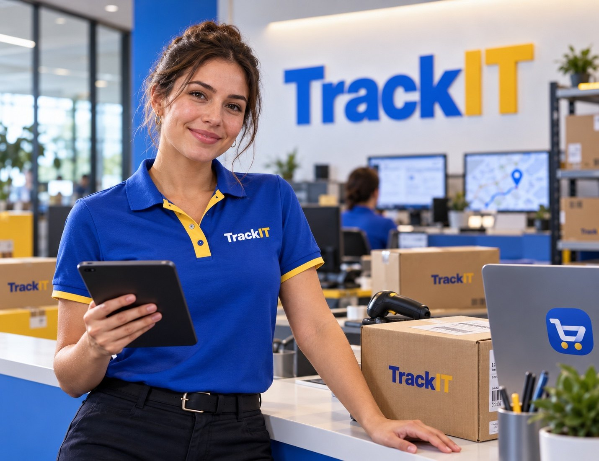
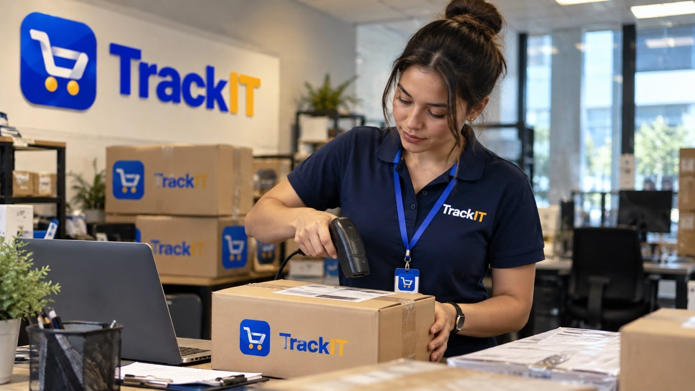
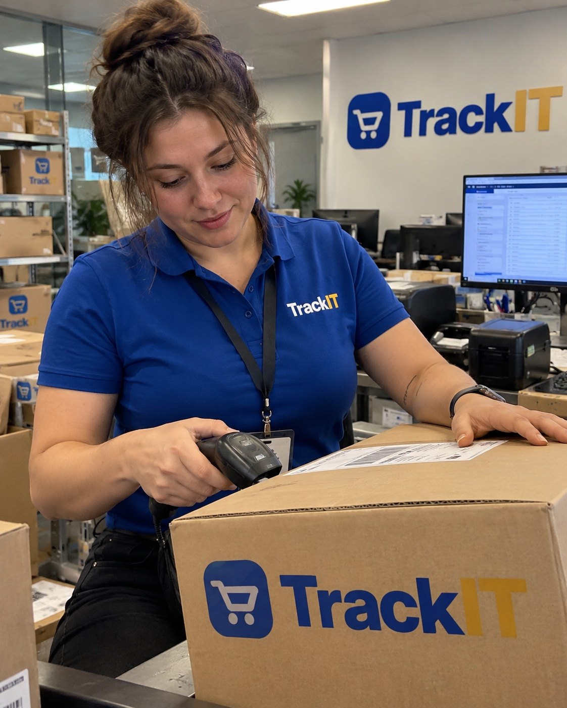

International Express
Origin, transit, clearance and destination milestones for cross-border deliveries.
Track IT gives customers a clear view of package milestones from receipt through final delivery, with package details, delivery dates and shipment-specific support.
International delivery workflows, package tracking, delivery scheduling and recipient-facing status information in one place.
Origin, transit, clearance and destination milestones for cross-border deliveries.
Package type, weight, recipient, address, value, delivery date and shipment notes.
Customers enter their unique Track IT code and see the latest scheduled checkpoint immediately.
Track IT organizes the delivery journey into easy-to-read stages, including receipt, transit, clearance, out-for-delivery and final delivery. That means fewer guesses and a clearer picture of what comes next.
EXPLORE DELIVERY SERVICES →
From origin and destination to shipping amount and scheduled arrival, Track IT presents the details that matter without making customers search through complicated screens.
WHY TRACK IT →
See where a shipment stands and which scheduled stage comes next, all from one tracking number.
Keep origin, destination, transit and delivery information together for local and international shipments.
When help is needed, customers can contact Track IT with the relevant tracking and delivery information already prepared.
From package processing to customer support, our tracking experience is designed around organized information and straightforward communication.

When a tracked shipment requires billing or support, the contact button prepares a message containing the tracking number, destination, amount and delivery date.